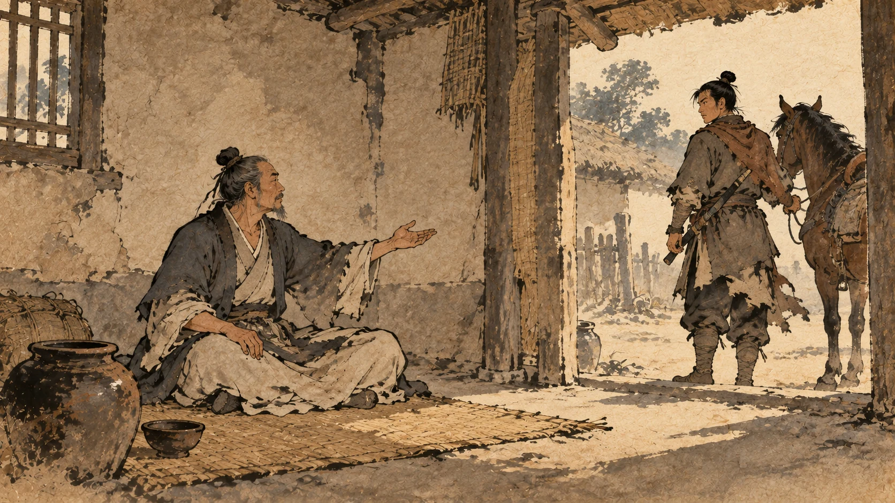
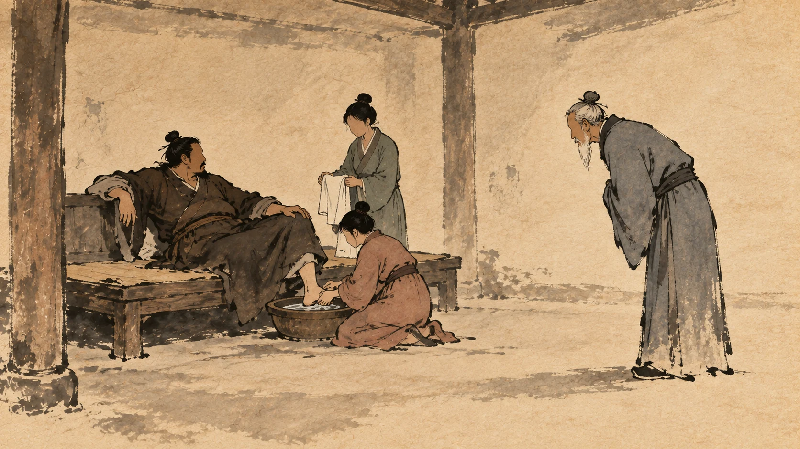
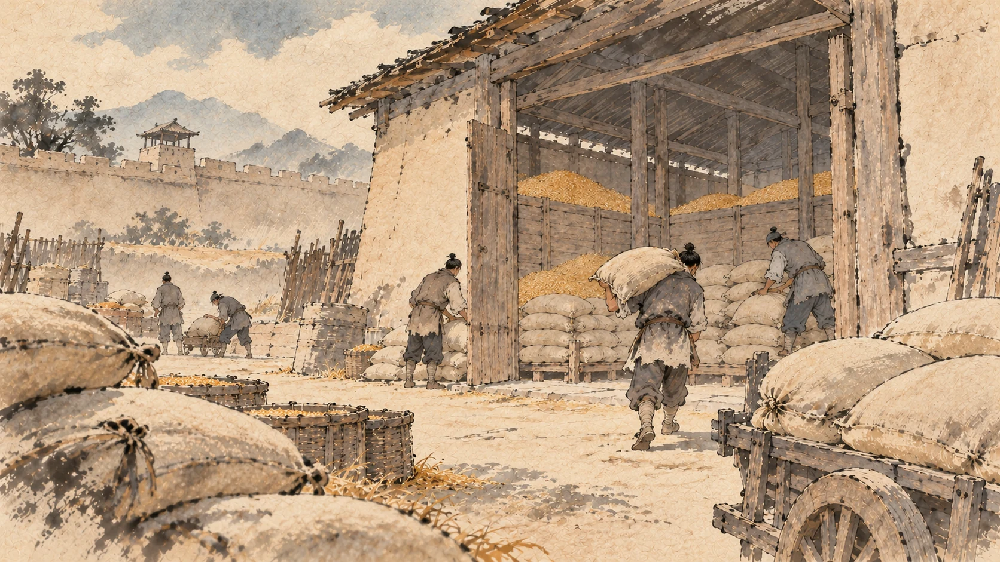
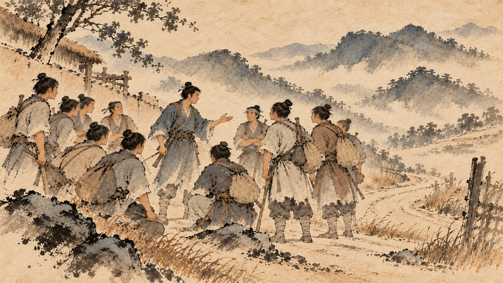
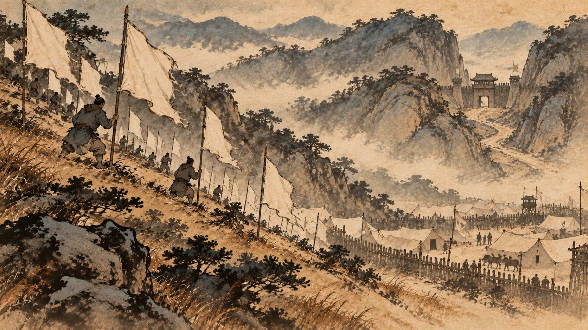
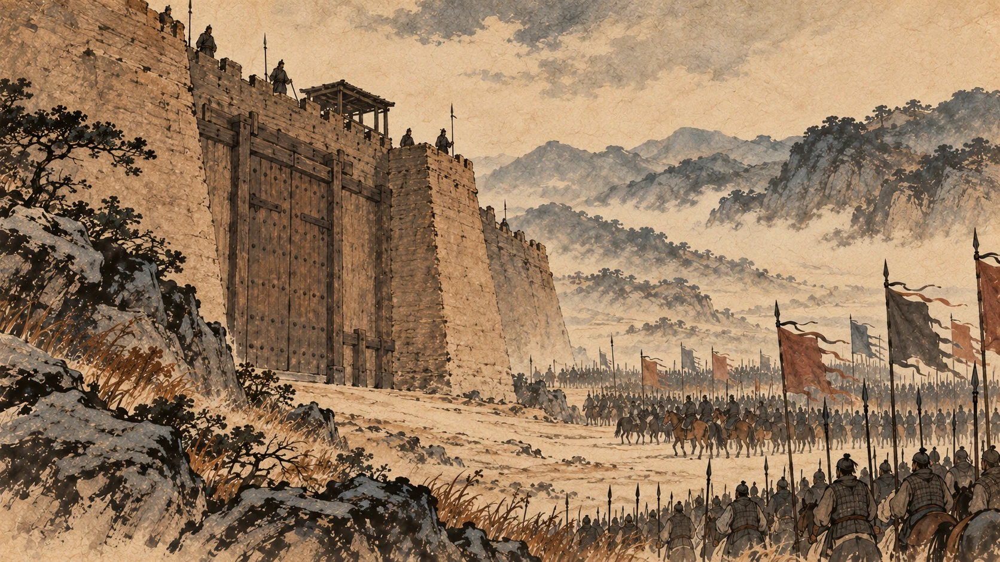

刘邦西进：从高阳到霸上
一、一个不喜欢读书人的领导

先说刘邦的一个毛病。
《史记》在讲郦食其这个人之前，先交代了刘邦的脾气：沛公不好儒，诸客冠儒冠来者，沛公辄解其冠，溲溺其中。与人言，常大骂。
刘邦不喜欢儒生。有客人戴着儒生的帽子来见他，他就把帽子摘下来，往里撒尿。跟人说话，经常张嘴就骂。①
这不是后人抹黑，这是《史记》原文。
就在这个背景下，来了一个人。
郦食其，陈留高阳人，家里穷，落魄，没有正经营生，做了一个“里监门吏”——守里门的小吏。但他有个名声：县里的贤豪不敢使唤他，大家都叫他“狂生”。
陈胜、项梁起兵之后，带兵路过这一带的将领有几十个。郦食其打听完他们的作风，得出结论：这些人都“握齱好苛礼自用”——器量小、爱讲小规矩、还自以为是，听不进大话。于是他躲起来，一个都不见。
后来他听说沛公在陈留这一带活动，就动了心。他跟人说：我听说沛公慢而易人，多大略——这真是我想跟的人。②
刘邦手下有个骑兵正好是郦食其的同乡。郦食其托他带话，那骑兵先劝他别去：沛公不喜欢儒生，戴帽子来的他往帽子里撒尿，跟人说话还老骂人——你没法用儒生那套去说动他。
郦食其说：你只管说。
二、那场戏

刘邦到了高阳，住在传舍里，派人召郦食其。
郦食其进来的时候，刘邦正“倨床使两女子洗足”——岔着腿坐在床上，叫两个女子给他洗脚。③
他就这么见了客人。
郦食其进来，行了一个长揖，不跪拜，开口问了一句：
足下欲助秦攻诸侯乎？且欲率诸侯破秦也？
您是打算帮着秦朝打诸侯呢，还是打算带着诸侯灭秦？④
刘邦当场就骂了：竖儒！天下同苦秦久矣，故诸侯相率而攻秦，何谓助秦攻诸侯乎？
你个臭书生！天下被秦朝折腾苦了，诸侯才接连起来打秦，什么叫我帮秦打诸侯？⑤
郦食其回了一句：必聚徒合义兵诛无道秦，不宜倨见长者。
您要真想聚集人马、会合义兵、诛灭无道的秦朝，就不该这么岔着腿接见年长的人。⑥
接下来是这一章的关节。
《史记》写了五个字：於是沛公辍洗。
他停了洗脚。
然后是：起摄衣，延郦生上坐，谢之。
站起来，整理衣服，请郦食其坐上座，向他道歉。⑦
我读这一段，最留意的不是郦食其有多傲。是他骂完人之后做了什么——
一个会在儒生帽子里撒尿、张嘴就骂人的人，被一句话点住，当场停了、改了、道歉了。
这是刘邦身上最值钱的东西，比他会打仗、会用人更值钱。你后面会反复看到这个模式：他一开始总是错的、粗的、不像话的，但只要有人把话说到点上，他当场就翻过来。
跟他打交道的那些人，后来都发现了一件事：跟这个人说话不白说。
三、陈留的粮食

郦食其坐下来之后，刘邦问他：计将安出？
有什么主意？
郦食其先泼了一盆冷水：足下起纠合之众，收散乱之兵，不满万人，欲以径入强秦，此所谓探虎口者也。
您带着一群临时凑起来的人，收的都是散兵，不到一万，就要直接往强秦里闯——这叫把手伸进老虎嘴里。⑧
然后他给出了办法：陈留是天下的要冲，四通八达，城里积了很多粮。他跟陈留县令有交情，可以去劝降；劝不下来，就在城里做内应。
结果是：陈留拿下来了，刘邦得到了秦朝存在那儿的粮食。郦食其被封为广野君，他的弟弟郦商带着几千人跟了刘邦。⑨
这一笔很重要：刘邦从此有了家底——粮和城。前面那些年他一直是“跟着别人打仗的人”，到这儿才算有了自己的根据地。
四、路上捡到的那个年轻人

也是在往西走的路上，刘邦遇到了另一个人。
这个人叫张良，来历比刘邦体面得多。
《史记》说，张良的祖父、父亲连着五代做韩国的相。秦灭韩的时候他还年轻，没来得及做官。韩亡之后，他弟弟死了，他不葬——把全部的财产拿出来，找刺客杀秦始皇，为韩国报仇。⑩
他找到一个大力士，做了一百二十斤重的铁椎。秦始皇东巡的时候，他们在博浪沙伏击，铁椎砸中了副车——砸错了。秦始皇大怒，在全国大搜捕，就是为了抓他。张良改名换姓，逃到下邳。⑪
然后是那个流传最广的故事：圯上老人。
他在下邳的桥上散步，一个穿粗布衣的老头走过来，把自己的鞋扔到桥下，回头对他说：小子，下去把鞋给我捡上来。
张良愣了一下，想揍他。看在他年纪大，忍住了，下去捡了。
老头又说：给我穿上。
张良已经捡了，就跪着给他穿上。老头伸着脚受了，笑着走了。走了一里多地，又回来，说了一句：孺子可教矣——这小子可以教。五天后天亮，在这儿见我。⑫
后来的三次赴约，张良前两次都迟到，第三次半夜就去等，老头给了他一部书，说：读这个就能做帝王的老师。十年之后会有大事，十三年后你在济北见我，谷城山下的黄石就是我。
天亮张良看那部书，是《太公兵法》。⑬
这个故事是传说。但它说明了一件事：张良在下邳这些年，不是一个躲避追捕的逃犯，他在读一本兵法。
而且有一件真事要记住：项伯曾经杀了人，躲在张良那儿。⑭
——你现在不用记住这个名字，记住这一条就行。将来有一天，这条人情会救刘邦一条命。
陈胜起兵之后，张良也聚集了一百多个年轻人。他本来想去投景驹，路上遇到了刘邦。
刘邦让他做了厩将——管马的官。
然后《史记》写了一段很要紧的话：良数以太公兵法说沛公，沛公善之，常用其策。良为他人言，皆不省。
张良好几次拿《太公兵法》跟刘邦讲，刘邦很喜欢，常常用他的计策。可是张良把这些话讲给别人听，别人都不明白。⑮
张良于是说了一句话：沛公殆天授。
沛公大概是天授的。
他从此不走了，再也没去见景驹。⑯
五、宛城：放过一座城，换来几十座
张良的建议一开始并不复杂：别硬闯。
但刘邦有时候很急。他往西打到南阳一带，遇到宛城，本来想绕过它直接走。
张良把他拦住了：沛公虽欲急入关，秦兵尚众，距险。今不下宛，宛从后击，强秦在前，此危道也。
您虽然急着入关，可秦兵还多，又守着险要。现在不下宛城就走，宛城从背后打你，强秦在前面挡你——这是死路。⑰
刘邦听进去了。
他做了一件很漂亮的事：夜里带兵从别的路绕回来，换了旗帜，天快亮的时候把宛城围了三重。⑱
宛城的守将（南阳守）绝望了，要自杀。
他手下有个舍人叫陈恢，说了一句：死未晚也——现在死还早。然后翻城出去见刘邦。
陈恢说的那段话，是一份谈判范本：
臣闻足下约，先入咸阳者王之。今足下留守宛。宛，大郡之都也，连城数十，人民众，积蓄多，吏人自以为降必死，故皆坚守乘城。今足下尽日止攻，士死伤者必多；引兵去宛，宛必随足下后：足下前则失咸阳之约，后又有强宛之患。为足下计，莫若约降，封其守，因使止守，引其甲卒与之西。诸城未下者，闻声争开门而待，足下通行无所累。
我听说您跟诸侯有约，先进咸阳的为王。现在您停在这儿打宛城：宛是大郡的都城，连着的城几十座，人多、积蓄多；官吏们觉得投降必死，所以都上城死守。您要是继续攻，死伤一定多；您要是撤兵走，宛城一定跟在您背后——前面丢了咸阳之约，后面又有强宛的麻烦。
给您出个主意：不如约降，封这个守将，让他留下守城，把他手下的兵带走一起往西。那些还没拿下的城，听到消息会抢着开门等您——您这一路就没有拖累了。⑲
刘邦说：善。
他封宛城守将为殷侯，封陈恢一千户，然后带着宛城的兵继续西进。
《史记》给这之后的结果只写了六个字：引兵西，无不下者。
一路往西，没有不投降的。⑳
放过一座城，换来了几十座城自己开门。这是刘邦西进路上最划算的一笔交易。
六、峣关：先造势，再买人，最后动手

往西走到峣关，这是咸阳最后一道关口。
刘邦本来打算用两万人强攻。
张良说不行：秦兵尚强，未可轻。臣闻其将屠者子，贾竖易动以利。
秦兵还强，不能轻看。我听说守关的那个将领是屠夫的儿子——做买卖出身的人容易被利益打动。㉑
然后他给了一套办法，这套办法有三层：
第一层，造势：您先留在营里，派人先走，给五万人准备饭食，在周围山上多插旗帜，做成疑兵的样子。㉒
第二层，买人：让郦食其带着贵重的东西去贿赂那个秦将。㉓
第三层，等他松动。
效果来了：秦将果然要反，提出跟刘邦联合，一起西进去袭咸阳。
刘邦想答应。
张良说了一句很冷的话：此独其将欲叛耳，恐士卒不从。不从必危，不如因其解击之。
这只是那个将领想叛，他手下的士兵怕不会跟着。士兵不听，就危险了——不如趁他们松懈的时候打。㉔
刘邦照做，大破秦军。往北到蓝田再打一仗，秦兵彻底垮了。
于是到了咸阳。秦王子婴投降。㉕
这一手，后来被反复研究：先用假象压住对方，再用钱买通对方的决策者，最后在对方内部松动、军心不稳的那一刻动手。张良连将领想降但士兵不一定肯这一层都算到了。
七、进了咸阳以后
汉元年十月，沛公的军队先于诸侯到达霸上。
秦王子婴用素车白马，把绳子系在脖子上，捧着皇帝的玺和符节，在轵道旁边投降。㉖
有人建议把秦王杀掉。
刘邦说：始怀王遣我，固以能宽容；且人已服降，又杀之，不祥。
当初怀王派我来，就是因为我能宽容；何况人家已经服了，再杀他，不吉利。㉗
他进了咸阳。
然后他犯了一个大多数征服者都会犯的错——他想住进秦朝的宫殿。
《史记》说他“欲止宫休舍”。樊哙劝他出来住，他不听。
张良接着劝，那段话很有名：夫秦为无道，故沛公得至此。夫为天下除残贼，宜缟素为资。今始入秦，即安其乐，此所谓“助桀为虐”。且“忠言逆耳利于行，毒药苦口利于病”，愿沛公听樊哙言。
秦朝因为无道，您才能到这儿。替天下除去残暴的人，该以朴素为本。刚进秦地就安享享乐，这叫帮夏桀干坏事。再说，忠言逆耳利于行，毒药苦口利于病——请听樊哙的话。㉘
刘邦出来了：封了秦朝的珍宝财物府库，带兵回霸上驻扎。
然后是那件被写进所有课本的事。
他把各县的父老和豪杰召集起来，说了一段话：
父老苦秦苛法久矣，诽谤者族，偶语者弃巿。吾与诸侯约，先入关者王之，吾当王关中。与父老约，法三章耳：杀人者死，伤人及盗抵罪。余悉除去秦法。诸吏人皆案堵如故。凡吾所以来，为父老除害，非有所侵暴，无恐！且吾所以还军霸上，待诸侯至而定约束耳。
父老们被秦朝的苛法害苦了：说句话就要灭族，聚在一起议论就要被处死。我跟诸侯有约，先入关的为王，我该做关中的王。现在跟父老们约定，法令只有三条：杀人者死，伤人和偷盗的抵罪。其余的秦法全部废除。各级官吏照旧留任。我到这里来是为父老除害，不是来侵暴你们的，别怕。我把军队退回霸上，是等诸侯到了再定规矩。㉙
然后他派人跟着秦朝的官吏，到各县各乡去传达。
结果《史记》写得很生动：秦人大喜，争持牛羊酒食献飨军士。
秦地的人非常高兴，抢着拿牛羊酒食来犒劳将士。
刘邦又不收，说：仓粟多，非乏，不欲费人。
仓库里粮多，不缺，不想让大家破费。
最后八个字是这一段的点数：人又益喜，唯恐沛公不为秦王。
人们更高兴了，只怕刘邦不肯当秦王。㉚
这段要慢慢读。一个征服者进了城，最省事的做法是抢。刘邦做的是：封府库、退军、只留三条法、不收礼。
四件事加起来，换来的是这八个字。
你现在回头看看第五章最后那件事：项羽在新安坑了二十多万秦人。同样在关中，两个人干的事一个是这个，一个是那个。
八、走错的那一步

但刘邦在关中做的事，还差最后一步没做完。
有人给他出了个主意：
秦富十倍天下，地形强。今闻章邯降项羽，项羽乃号为雍王，王关中。今则来，沛公恐不得有此。可急使兵守函谷关，无内诸侯军，稍征关中兵以自益，距之。
秦地富庶，地势好。听说章邯已经降了项羽，项羽封他做雍王，让他管关中。项羽要是来了，您就守不住这里了。不如赶紧派兵把守函谷关，不让诸侯的军队进来，再慢慢征召关中的兵增强自己，挡住他们。㉛
刘邦听了，照做了。
《史记》在这里没有评价，只写了两个字：从之。
十月中，项羽果然带着诸侯的军队往西来了，要入关。
关门是闭着的。
项羽听说刘邦已经拿下关中，大怒，派黥布等人攻破了函谷关。㉜
这是刘邦这辈子最有名的一次“听错话”。
前面所有的宽厚、所有的收买人心，都在这一道关着的门上打了折——因为对项羽来说，这不是一场误会，是一个先入关的人在关起门来独吞。
十二月中，项羽到了戏。从戏到鸿门，只有四十里。
而在刘邦的营里，有一个人正准备出卖他。
下一章：鸿门宴。